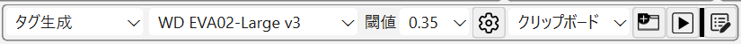
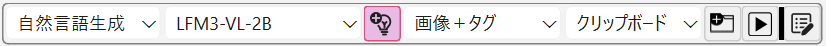
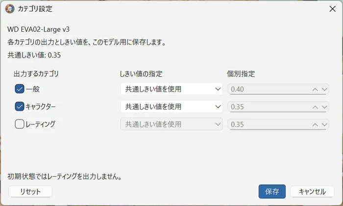
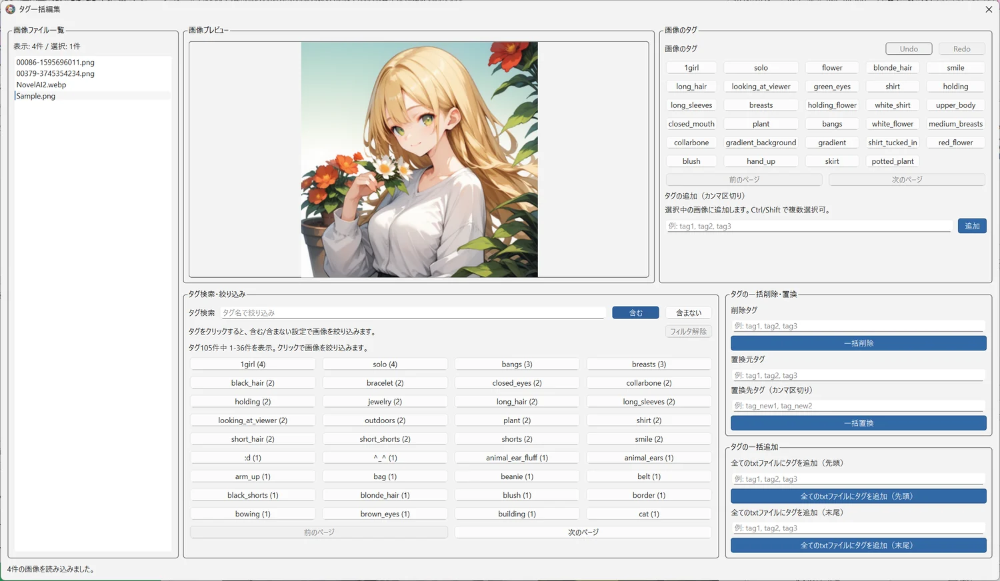

タグ・説明生成
画像の内容をAIが読み取り、タグ（Danbooru形式）や英語の説明文（キャプション）を生成します。LoRAなどの学習データ作りや、画像の内容整理に使えます。
2つの生成方式
| タグ生成 | 自然言語生成 | |
|---|---|---|
| 出力の例 | 1girl, solo, long_hair, blonde_hair, flower, smile … | A young woman with long blonde hair holds a bouquet of flowers … （英語の文章） |
| 向いている用途 | Stable Diffusion系の学習用タグ、プロンプト作り | 文章で学習するモデル向けのキャプション、画像の説明 |
| 調整できること | 閾値、出力するカテゴリ | 入力方式（画像のみ／画像＋タグ）、思考 ON／OFF |
| 出力先 | TXT保存／画像へ埋込／クリップボード | TXT保存／クリップボード |
タグ生成

12345678
| 1生成方式 | 「タグ生成」を選びます。 |
| 2モデル | タグ生成に使うモデル（下表）。モデルを切り替えると、閾値もそのモデルの初期値になります。 |
| 3閾値 | どれくらい確信のあるタグまで出すか。大きくするとタグが減り、小さくすると増えます。 |
| 4カテゴリ設定 | 出力するカテゴリ（一般・キャラクター・レーティングなど）と、カテゴリごとの閾値を設定します。 |
| 5出力先 | TXT保存（画像と同名の .txt）／画像へ埋込／クリップボード（下表）。 |
| 6フォルダ | ONにして実行すると、同じフォルダの画像すべてを処理します（クリップボード出力は不可）。 |
| 7実行 | 生成して、選んだ出力先に書き出します。 |
| 8タグ一括編集 | フォルダ内の .txt タグをまとめて編集します（下記）。 |
タグ生成モデル
どのモデルもアプリには同梱しておらず、初回だけダウンロードします。迷ったら初期モデルの WD EVA02-Large v3 から試してください。
| モデル | 閾値の初期値 | タグ数 | 知識の新しさ | 特徴・注意点 |
|---|---|---|---|---|
| WD EVA02-Large v3 | 0.35 | 10.9k | 2024年2月 | 初期モデル。WD系の定番 |
| WD EVA02 2026 Canary | 0.55 | 16.5k | 2026年5月 | WD EVA02-Large v3 を最新データで追加学習した派生版 |
| PixAI Tagger v1.0 | 0.35 | 30.9k | 2026年5月 | 高解像度入力の重量級モデル。GPU推奨 |
| CL Tagger v1.02 | 0.55 | 品質・レーティングのカテゴリも出力 | ||
| CL Tagger v2.00 | 0.55 | 108.0k | 2026年頃（推定） | 10万種類超のタグに対応。独自ライセンスのため手動で配置 |
| OppaiOracle V1.1 | 0.75 | 19.3k | 2024年頃（推定） | 誤タグ・タグ抜けを修正したデータで学習 |
| Z3D-E621 ConvNext | 0.35 | e621形式のタグ（ケモノ系の画像向け） |
自然言語生成（キャプション）

12345678
| 1生成方式 | 「自然言語生成」を選ぶと、画像を説明する英語の文章（1段落）を生成します。 |
| 2モデル | 説明文の生成に使うモデル（下表）。 |
| 3思考 ON／OFF | ONにすると、画像をよく検討してから文章を作ります。精度は上がりやすい一方、時間がかかります。 |
| 4入力方式 | 画像のみ／画像＋タグ。画像＋タグでは、タグ生成で選んだモデルと閾値・カテゴリ設定で先にタグを作り、説明文の手がかりにします。 |
| 5出力先 | TXT保存（画像名.caption.txt）／クリップボード。 |
| 6フォルダ | ONにして実行すると、同じフォルダの画像すべてを処理します（クリップボード出力は不可）。 |
| 7実行 | 生成して、選んだ出力先に書き出します。 |
| 8タグ一括編集 | タグ用の .txt をまとめて編集します（.caption.txt は対象外）。 |
自然言語生成モデル
どのモデル（初期モデルの Florence-2 Base を含む）もアプリには同梱しておらず、初回だけダウンロードします。GPUのメモリ（VRAM）が足りない場合は小さいモデルを選んでください。
| モデル | 初回ダウンロード | VRAMの目安 | 画像＋タグ | 思考 |
|---|---|---|---|---|
| Florence-2 Base（初期モデル） | 約0.93GB | — | —（画像のみ） | — |
| Qwen3.5 2B | 約1.95GB | 4GB | 対応 | 対応 |
| Gemma 4 E2B | 約3.83GB | 4.5GB | 対応 | 対応 |
| LFM3-VL-2B | 約1.43GB | 4GB | 対応 | 対応 |
| JoyCaption Beta One | 約5.36GB | 6.5GB | 対応 | — |
出力先
| 出力先 | 内容 |
|---|---|
| TXT保存 | 画像と同じフォルダに保存します。Sample.png の場合、タグは Sample.txt、説明文は Sample.caption.txt。 |
| 画像へ埋込 | タグをプロンプトとして画像のメタデータに書き込みます（PNGは parameters、JPEG／WebPはExif）。メタデータ詳細でプロンプトとして表示されます。タグ生成のみ。 |
| クリップボード | 現在の画像の結果をコピーします。フォルダ一括処理では使えません。 |
カテゴリ設定

12345| 1出力するカテゴリ | チェックしたカテゴリのタグだけを出力します。選べるカテゴリはモデルによって異なります。 |
| 2しきい値の指定 | ツールバーの共通しきい値を使うか、カテゴリごとに個別に指定するか。 |
| 3個別指定 | カテゴリごとのしきい値。 |
| 4リセット | 初期設定に戻します（初期状態ではレーティングを出力しません）。 |
| 5保存 | このモデル用の設定として保存します。 |
タグ一括編集

123456| 1画像ファイル一覧 | フォルダ内の画像。Ctrl／Shift で複数選択できます。 |
| 2画像プレビュー | 選択中の画像。 |
| 3画像のタグ | 選択中の画像の .txt に書かれたタグ。カンマ区切りで追加できます（Undo／Redo対応）。 |
| 4タグ検索・絞り込み | フォルダ内の全タグを使用数つきで一覧表示。タグをクリックすると、そのタグを含む／含まない画像に絞り込みます。 |
| 5タグの一括削除・置換 | 指定したタグを全ての .txt から削除、または別のタグに置き換えます。 |
| 6タグの一括追加 | 全ての .txt の先頭または末尾にタグを追加します（トリガーワードの追加など）。 |
学習データを作る流れ（例）
- 学習に使う画像を1つのフォルダにまとめ、そのうち1枚を開く
- タグ生成で出力先を「TXT保存」、フォルダをONにして実行（全画像に同名の .txt ができます）
- タグ一括編集で、不要なタグの削除・表記ゆれの置換、先頭にトリガーワードの追加
- 必要に応じて「ファイル名の変更」で連番にリネーム（.txt も連動して変わります）